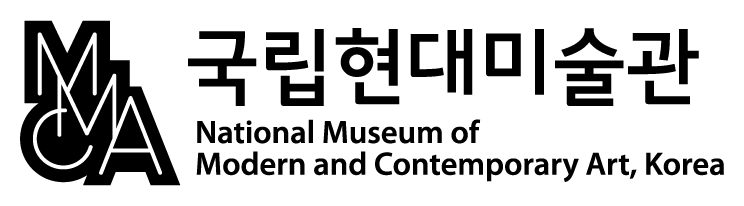
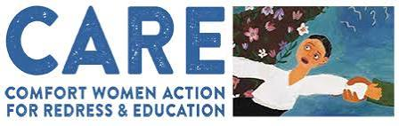
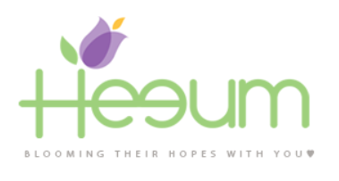
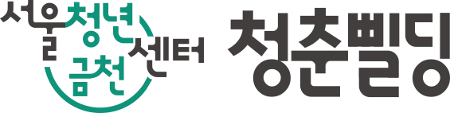
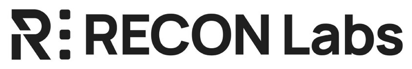

이야기가 기술보다 먼저입니다.
저는 그 이야기를 뒷받침하는 경험을 디자인합니다.
The story comes before the technology.
I design experiences that support it.
미디어 아트를 전공한 배경 덕분에, 적합한 크리에이티브 툴을 조합해 아이디어를 빠르게 현실로 만들 수 있습니다. 미술관과 문화 기관들과 협업하며 각 프로젝트의 목표를 이해하고, 그 핵심 메시지를 몰입감 있는 경험으로 번역하는 법을 배웠습니다.
My background in Media Art helps me quickly bring ideas to life using the right mix of creative tools. Working with museums and cultural institutions has taught me how to understand each project's goals and translate its core message into engaging experiences.
메시지를 매체보다 우선하는, 기술에 능숙한 크리에이티브를 찾고 계시다면 커피 한 잔 해요.
If you're looking for a tech-savvy creative who puts the message before the medium, let's grab a coffee.
중요하게 생각하는 것What I Care About
협업Collaborated with




